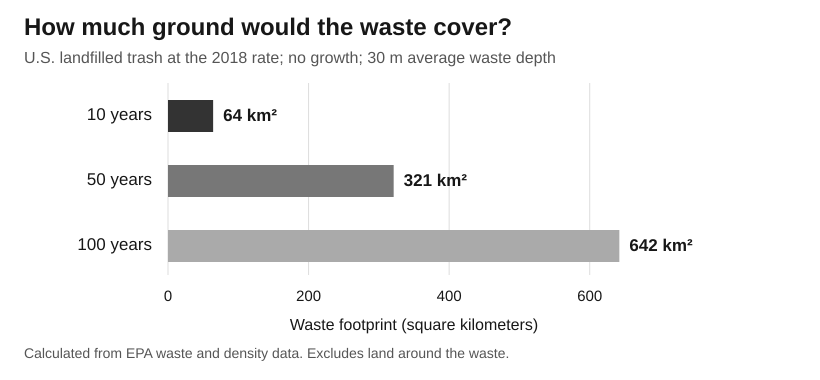

How much landfill space would we need?
At the EPA's 2018 disposal rate, 100 years of U.S. household and business trash would cover about 642 km² if it were packed 30 meters deep. That is a square about 25.3 km on each side. This is a size estimate, not a plan to put all the trash in one place.

What changes the answer?
| 100-year case | Waste footprint |
|---|---|
| Baseline | 642 km² |
| Recycle an extra 10% | 578 km² |
| Compost an extra 10% | 578 km² |
| Do both | 514 km² |
| Waste grows 1% per year | 1,095 km² |
| 1% growth, plus both changes | 876 km² |
Here, “extra 10%” means 10% of the trash that would otherwise go to a landfill. The recycling and composting cases remove different material, so nothing is counted twice. Existing recycling is already left out of the baseline.
Doing both cuts the area by 128 km². But if trash grows 1% each year, the same two changes still need 876 km². Over a long time, slow growth adds up.
Space is only part of the cost
A country may have enough total land and still have a local landfill problem. Trucks must reach the site. Neighbors bear noise and smell. Land also has other uses. Packing waste into less space does not tell us whether disposal is cheap or safe.
Recycling and composting can save landfill space, but collecting and sorting material also cost money. This model does not price those tradeoffs or count methane. It answers one question: how much room does the waste itself take?
Inputs, sources, and how to repeat the work
Inputs
- 146.1 million U.S. short tons per year: waste landfilled in 2018, not all waste produced. This is the latest year in EPA's national Facts and Figures series checked on October 4, 2026. It is not a measurement of 2026 waste.
- 688 kg/m³: EPA's fallback value for packed waste. The 1997 report gives a range of 653–830 kg/m³. Real sites vary.
- 30 meters: an assumed average thickness of waste across the footprint, about 98 feet. This is not a national average or the height of one daily layer. The 20 and 60 meter cases test this choice.
- Growth and diversion: chosen tests, not forecasts. Growth starts in year 2. Diversion starts in year 1 and holds the same share each year.
The math
1 U.S. short ton = 907.18474 kg Total mass = 146,100,000 × 907.18474 × number of years Volume = total mass ÷ 688 Area in km² = volume ÷ 30 ÷ 1,000,000 With yearly growth g, replace “number of years” with: ((1 + g)^years − 1) ÷ g For zero growth, use the number of years. Then multiply mass by (1 − extra recycling − extra composting).
This treats packed waste as a simple block. It leaves out roads, buffers, cover soil, slopes, liners, and support buildings. It does not subtract space freed by later settling. It also excludes construction debris, sewage sludge, and industrial process waste. Recycling plants and compost sites need their own space, which is not counted here. Removing different materials could change the remaining waste's density; this simple test holds density fixed.
More checks on growth, depth, and density
| 100-year case | Waste footprint |
|---|---|
| Waste grows 2% per year | 2,005 km² |
| 20 m average depth | 963 km² |
| 60 m average depth | 321 km² |
| Lower density: 653 kg/m³ | 677 km² |
| Higher density: 830 kg/m³ | 532 km² |
Doubling depth halves the footprint in this model. Denser waste also takes less room. Neither change makes the waste or its harm disappear.
How AI was used
AI found the EPA sources and built a mass-to-volume model. It was asked to compare 10, 50, and 100 years, then change growth, recycling, composting, depth, and density. Checks kept short tons separate from metric tons and avoided subtracting existing recycling twice. The figures are new calculations from those inputs, not a copied chart.
To extend this work, replace the annual flow with a local figure and add land prices or hauling costs. Download all calculations (CSV) or download the calculation code.
Sources
- EPA, National Overview of Materials, Wastes and Recycling: 2018 landfilled waste and the scope of municipal solid waste.
- EPA, Facts and Figures: identifies 2018 as the most recent year in this series.
- EPA, AP-42 Section 2.4 background report, August 1997, printed p. 2-3 (PDF p. 9): packed-waste density and its range.
- EPA, Municipal Solid Waste Landfills: site restrictions, liners, water collection, and operating practices.